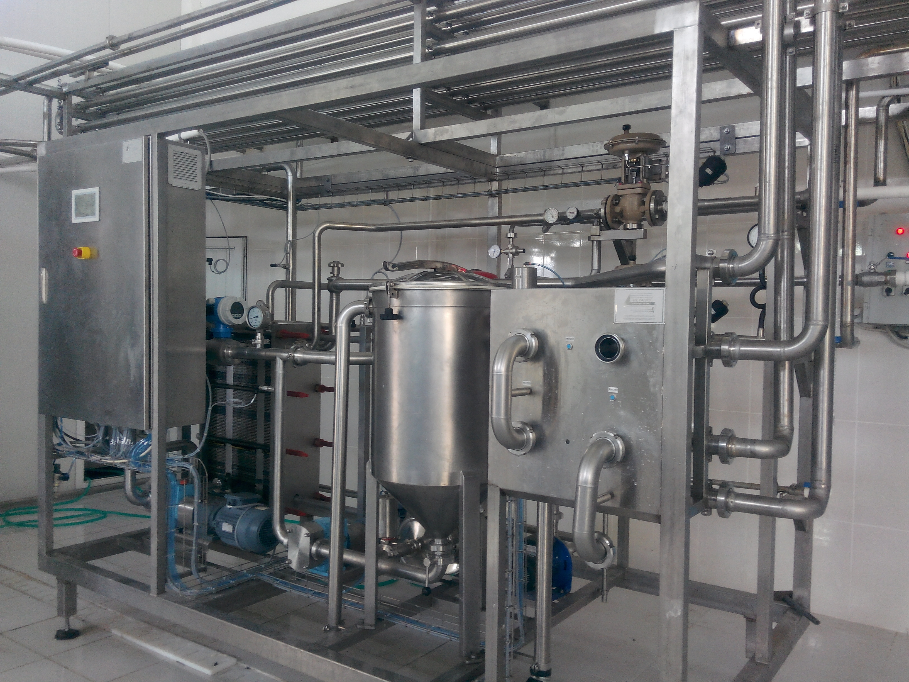
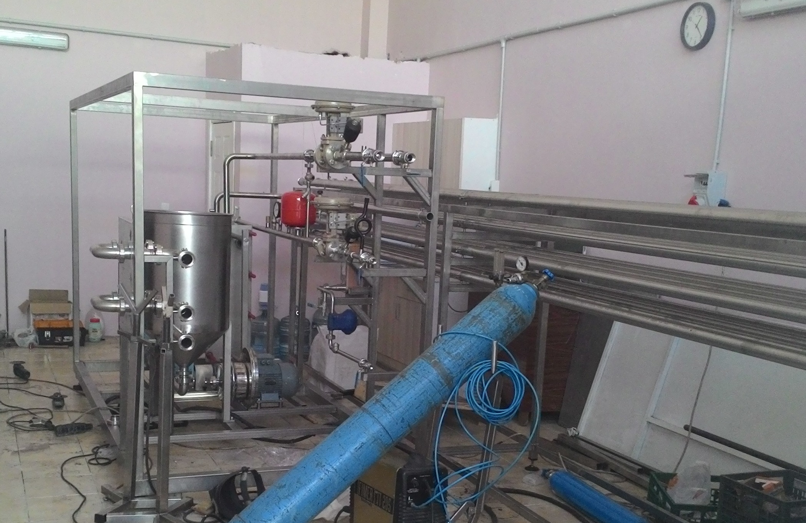
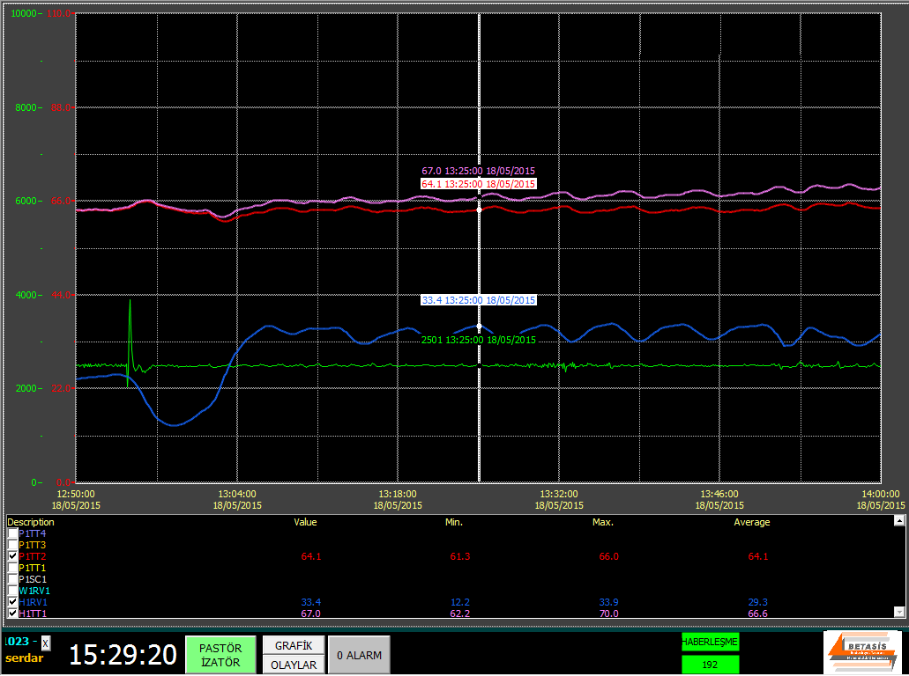

BETASİS ENDÜSTRİYEL PASTÖRİZATÖRLERİ

Pastörizatör Tasarımı
Ürüne ve kapasiteye göre pastörizatör tasarımı
- Projelendirme ve çizimler
- Eski pastörizatörlere otomasyon ve SCADA uygulaması
- Mekanik tasarım
- Ekipman seçimi
- Diğer üretim birimleri ile uyumlu çalışma
- Separator , Homojenizatör vs. entegrasyonu

Pastörizatör Otomasyonu
Pastörizatörün operatörden bağımsız tam otomatik olarak çalıştırılması.
- Touch Panelli veya Scada Otomasyonları
- Reçete yapısı ile değişik ürünlerde çalışabilme
- Operatörün hata yapmasını engelleyecek kontroller
- Laboratuar ile entegre çalışan yazılımlar
- SQL Veri Toplama

Pastörizatör Montaj İşleri
Hijyenik Tesisat ve Borulama İşleri
- Tasarlanan Pastörizatörün Toplanması
- Sahada yapılacak ürün hatları borulaması
- Gıdaya Uygun Hijyenik Montajlar
- Elektrik pnımatik saha montajları
- Üretim-CIP Bağlantı panelleri
- Diğer birimler ile bağlantılar

Pastörizatör Raporlama
SCADA Sistemi Üzerinden veri Toplama ve Raporlama
- SQL Server Tablolarında veri toplama
- Yapılan üretimler ve temizliklerin zamanları , sonuçları
- OEE yazılımı ile verimlilik takibi
- İşletmeye özel raporlama
- Tüm sıcaklık , basınç , akış değerlerinin geçmişe yönelik izlenebilirliği
- İşletmedeki ERP yazılımına veri göderimi